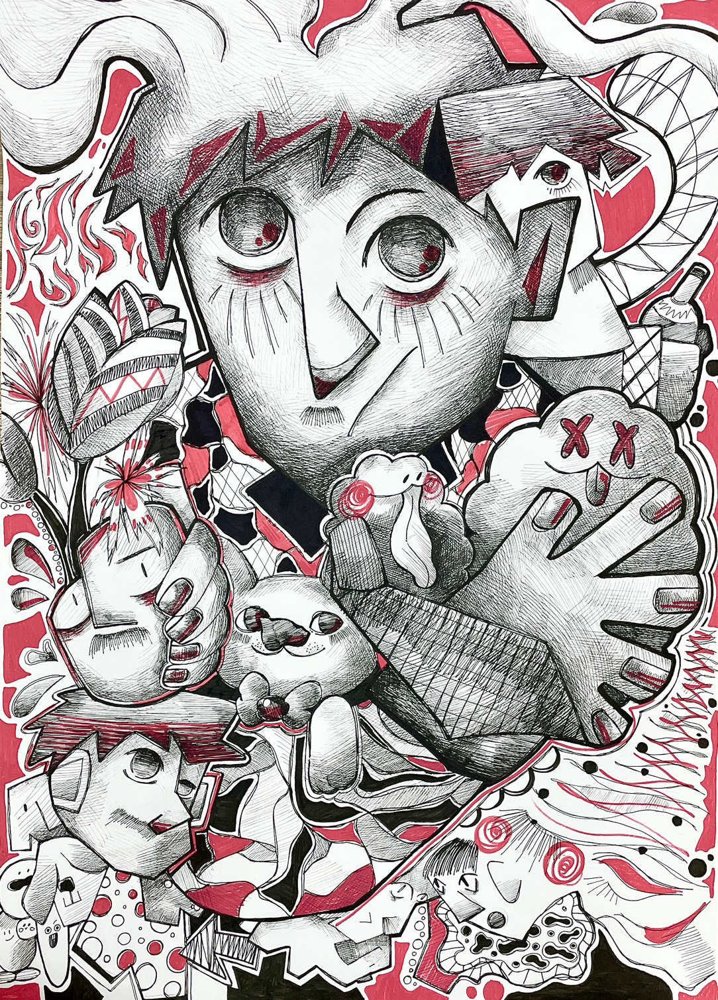

插畫創作
把腦袋內的想法像是果汁一般新鮮的現榨出來！

PROJECT INTRODUCTION
關於我內心那些構成我的元素
我透過把圖像平面化的形式去呈現，顏色以黑白灰與鮮明的紅色作為對比，希望能展現紅色那熱情湧動的氛圍，並把毛茸茸、貓咪、植物等多種我腦內充滿的想法置入進畫面中，這些都是完成我的重要線索。
把腦袋內的想法像是果汁一般新鮮的現榨出來！

我透過把圖像平面化的形式去呈現，顏色以黑白灰與鮮明的紅色作為對比，希望能展現紅色那熱情湧動的氛圍，並把毛茸茸、貓咪、植物等多種我腦內充滿的想法置入進畫面中，這些都是完成我的重要線索。